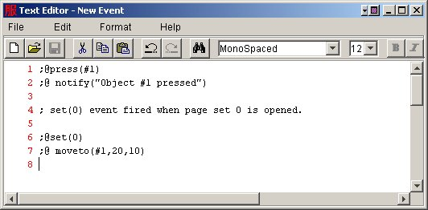
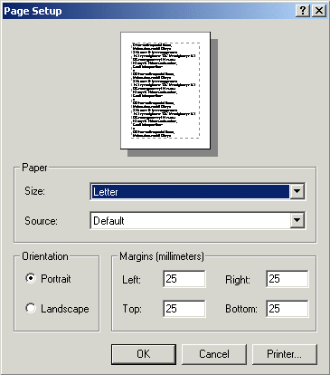
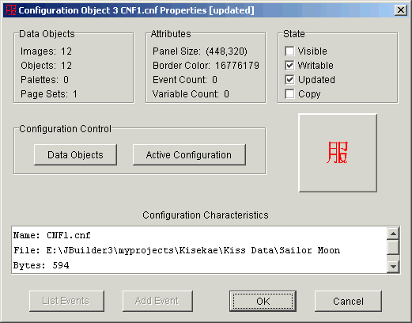
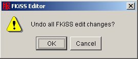

Welcome to the Kisekae UltraKiss program documentation. The FKiSS Editor Menu provides a standard drop down list of commands for all program functions.
The FKiSS Editor can edit the text of any event and apply the changes to the current data set configuration. The changes take effect immediately and do not require a restart of the configuration. All changes to event definitions are re-parsed to identify syntax errors before any event definition is changed.

More than one new event declarations can be defined. All events within the text file will be created when the text editor is closed. Each event is a new event and is added to the current configuration. It is valid to create multiple events such as press events for the same KiSS object. Each event declaration is unique and individually processed when the external event signal occurs. New event definitions are undoable commands.
When events are added to the configuration the command syntax is checked for errors. If a syntax error exists a warning message as shown in Figure 2 will be displayed. When the error is acknowledged a new text editor session will be created to enable error correction.
The Edit Event command is used to open a new Text Editor window that contains the full event text for the selected event. To select an event highlight an event name or an event action command in the FKiSS Editor event list display. If an action command is selected the editor is invoked for the parent event of the action command.
The event name can be changed, the event parameters can be changed, and action commands can be added or removed from the event definition. When the text editor is closed any updated event definitions are parsed for syntax errors. If no errors exist the original event is removed from the configuration and replaced with the new event definition. Event editing is an undoable command.
If syntax errors exist then a message as shown in Figure 2 will be displayed and the text editor will be re-invoked to correct the error.
New event definitions can be added through the Edit Event command. The selected event will be replaced with the first event definition and all other events in the edited file will be added to the configuration as new, unique events.
The Delete Event command will remove the selected event definition from the current configuration. To select an event highlight an event name or an event action command in the FKiSS Editor event list display. If an action command is selected the editor is invoked for the parent event of the action command.
A confirmation prompt dialog as shown in Figure 3 is displayed to confirm event deletion. Event deletion is an undoable command.

Figure 3. Event Deletion Confirmation
The Configuration command is used to open a Text Editor window to view the full configuration text. Editing changes to the event declarations can also be made within the configuration file. If changes are made the complete KiSS configuration will be reloaded into UltraKiss. The configuration reload will terminate the current FKiSS Editor session and restart the KiSS set.
All FKiSS breakpoints will be removed if the configuration is reloaded.
The Page Setup dialog is an operating system dependent interface into the print control subsystem to size and orient the print page in preparation for printing. Figure 4 shows the Page Setup dialog for a Microsoft Windows operating environment. Not all systems will support all features for page control.

Figure 4. Page Setup Dialog
The Print Preview command is used to preview all print pages before printing. Figure 5 shows an example of the UltraKiss Print Preview dialog screen. UltraKiss will center and scale the current page image on the print page. The preview image of the print page can be scaled to any size required by changing the percentage value in the preview control field. Preset values of 10%, 25%, 50% and 100% are provided for convenience.
The Page Setup can be changed from this dialog and Printing can be initiated directly.

Figure 5. Print Preview Dialog
The Print dialog is an operating system dependent interface into the print control subsystem to initiate printing of a print page. Figure 6 shows the Print dialog for a Microsoft Windows operating environment. Not all systems will support all features for print control.

Figure 6. Print Dialog
The Properties command shows a standard dialog window to display attributes of the currently loaded KiSS configuration file or the currently selected event or action item. Figure 7 is an example of a KiSS configuration properties dialog. This dialog provides detailed information on the technical aspects of the active KiSS configuration and provides control buttons to view additional information about associated data objects.

Figure 7. Configuration Properties Dialog
This dialog window is a entry into the complete Kisekae UltraKiss subsystem to display the attributes and properties of all objects associated with an active KiSS data set. Refer to the Object Properties subsystem for a comprehensive description of all subsystem features, dialogs, and operation control.
The Exit command closes the FKiSS Editor window. When the FKiSS Editor closes the edit history within the FKiSS editing session is not retained for future editing sessions.
FKiSS Editor edit functions can only be undone within the current editing session. Once the FKiSS Editor is closed the edit history is not retained. The FKiSS Editor is designed to be re-entrant for continuous breakpoint processing and code correction. Thus, the editor should only be terminated when all edit history can be discarded.
The FKiSS Editor supports full undo and redo edit recovery for event editing operations and variable value changes. These types of editing changes are reversible. The Undo command will reverse the last edit change that was made to the current KiSS configuration file.
The FKiSS Editor supports full undo and redo edit recovery for event editing operations and variable value changes. These types of editing changes are reversible. The Redo command will re-apply the last edit change that was made to the current KiSS configuration file.
The Undo All command will roll back all edit changes that have been made since the FKiSS Editor session was started. This command cannot be undone. A confirmation dialog as shown in Figure 8 will inquire if this operation should proceed.

Figure 8. Undo All Confirmation
The Run Menu provides a set of commands to control breakpoint processing and debugging of FKiSS events. You can set dynamic breakpoints on any FKiSS event or action statement, the code will automatically interrupt, and you can visually step though your code and watch it run. The event handling interrupts whenever it tries to process a command that is flagged to breakpoint. When breakpointed the window title will start with "Breakpoint" and the event display will open to the interrupted statement. If you are in breakpoint mode and tracing an event, you can single step through the code (F3), step into the code (F4), run to a selected statement (F5), or run to the end of the current event (F6). The active breakpoint line is shown in blue. Execution is interrupted 'before' any breakpoint statement is executed so variable values show the before state. If you single step through the code the statement is executed in its entirety and the current line will move to the next line. If you want to look at the 'after' values for the variables once the statement is executed, examine the FKiSS Editor variable list or hold your cursor over the just executed line to see a tool tip pop-up.
The Execute Statement command single steps through the FKiSS code and executes each action statement in sequence. This command fully executes any contained subroutine or gosub() action call before stopping at the next statement. If the current statement is a goto() action, the Execute Statement command will stop at the first statement of the new label event.
When the top level traced event is complete the FKiSS Editor will display the message as seen in Figure 9.

Figure 9.
The Trace Into Call will drill down into subroutine or gosub() action commands and breakpoint at the first action statement of the contained routine. This command is equivalent to an Execute Statement if the current action statement is not a subroutine call. If you trace into any action call that invokes an alarm event, an interim breakpoint is set on the alarm, the current traced event runs to completion, and the FKiSS Editor will open as soon as the specified breakpointed alarm is fired.
The Run To Selection command will resume action command processing. The process will stop when the currently selected line in the FKiSS Editor event list is reached or if the event terminates. Statements can be selected in the FKiSS Editor event list by clicking on a line or using the cursor control keys to position the selection to an alternate location. This command is frequently used to resume breakpointed tracing at a specific location without stepping though intervening action statements.
The Run to Call Return command will resume action command processing. The process will stop when the current traced event completes. If this event was called from another event, continued tracing through an Execute Statement command will return to the next executable statement in the calling event. This command is typically used to stop tracing the current event, yet continue to trace execution within the parent event.
The Set Breakpoint command will place an execution breakpoint on the currently selected event declaration or action command statement. Statements can be selected in the FKiSS Editor event list by clicking on a line or using the cursor control keys to position the selection to an alternate location. Event breakpoints interrupt normal processing whenever the event is executed. Action statement breakpoints interrupt normal processing whenever the action statement is executed. Breakpoints can be set through this command or by right clicking while the mouse is positioned over an event or action statement. Breakpointed lines are shown in red.
The Clear Breakpoint command clears a breakpoint from the currently selected event declaration or action command statement. Statements can be selected in the FKiSS Editor event list by clicking on a line or using the cursor control keys to position the selection to an alternate location. Breakpoints can be cleared through this command or by right clicking while the mouse is positioned over an event or action statement that has a breakpoint defined. Breakpointed lines are shown in red.
The FKiSS Editor can pause execution at the next statement or event processed if requested. The Disable Breakpoint command is used to exclude the currently selected event from automatic pause breakpoint processing. In certain cases you may not wish to pause execution on a specified event. The Disable Breakpoint command is used to eliminate these selected events from pause breakpoints.
Text for disabled events is shown in a light grey color. If the currently selected statement is an action statement the Disable Breakpoint command will disable pause breakpoints for the action parent event. If an event is disabled all breakpoints for the event and event actions are removed. Individual breakpoints can be restored on disabled action statements through the Set Breakpoint command.
The Enable Breakpoint command restores a disabled event to normal state. Disabled events are excluded from automatic pause breakpoint processing.
Text for disabled events is shown in a light grey color. If the currently selected statement is an action statement the Enable Breakpoint command will enable pause breakpoints on the action parent event. If an event is enabled all current breakpoints for the event and event actions are retained.
The Clear All Breakpoints command will remove all breakpoint settings from all event and action statements. This command is enabled if at least one breakpoint is set in the configuration.
You may wish to pause execution at the next event processed without knowing the event that is being invoked. Or, you may wish to debug the executed event code based upon on a user action such as a mouse press. The Program Pause command can be used to stop FKiSS execution at the next event or action statement processed. When the pause breakpoint is recognized the FKiSS Editor will be automatically invoked to trace the event code.
The FKiSS event handler state is monitored by the indicator light at the right end of the editor toolbar. A green light means the configuration is running and events are being processed. Red means the event handler is suspended. Yellow means that the configuration is running but will interrupt or break at the first action command it has to process. If the indicator is green a Program Pause command will turn the indicator yellow. If the indicator is red a Program Pause command will activate program execution and the indicator will turn yellow. Note that if you set a pause breakpoint and there is an event that is being repetitively processed in a timer loop, the interrupt can happen almost immediately, the indicator will turn red, and you will directly transition to breakpoint mode.
Pause breakpoints are one time occurrences. When the FKiSS Editor is invoked on a pause breakpoint the pause state is cleared. The pause breakpoint can also be cleared manually by pressing the yellow indicator light. This will remove the pause request and the indicator will turn green.
Execution is always resumed on a Program Pause and the UltraKiss main screen will be brought to the foreground. The FKiSS Editor screen may continue to show in the background, however it will not be the active window.
The Program Resume command continues program execution from a breakpoint state. When execution is resumed the event handler is activated and the UltraKiss main screen will be brought to the foreground. The FKiSS Editor screen may continue to show in the background, however it will not be the active window.
The Program Resume command is the preferred way to return to your current UltraKiss session without permanently closing the FKiSS Editor. New breakpoints will be processed by the current FKiSS Editor. Thus, the undoable edit change history will remain valid for your editing session.
When the program is resumed it may immediately breakpoint again on a new FKiSS action command or event. This could occur if a breakpoint was set on another action statement or event declaration or if a pause breakpoint had been set.
The Program Restart command is used to reload the KiSS configuration and restart program execution. Program restarts are required to breakpoint on initialize() of begin() events that execute during program start-up. If a breakpoint has been set on an initialize() or begin() event a new FKiSS Editor session will be automatically launched on the configuration activation to trace the event.
A program restart will always terminate the FKiSS Editor. All undoable edit change history is lost on program restarts.
The Pause on Event option, if set, instructs the UltraKiss event handler to recognize pause breakpoints only on new event executions. Breakpoints are not recognized for action commands within an event. This option is the default behaviour for pause breakpoints.
The Pause on Action option, if set, instructs the UltraKiss event handler to recognize a pause breakpoint on any enabled FKiSS action command. If Pause on Action is set, Program Pause requests within a breakpointed event will cause new breakpoints to occur on each consecutive action statement.
The Contents command invokes the UltraKiss online help system. Access to all product documentation is available. The online help system provides a complete index and navigation system to various topics of interest.
The About command shows a standard program information dialog that provides copyright and program version information. Figure 10 show an example of the UltraKiss program About dialog. The program icon is the Kanji character for clothing and the Japanese characters show the Kanji word for paper dolls.

Figure 10. About Dialog
Next Document: Toolbar
Commands
Prior Document: FKiSS Editor Introduction
Copyright (c) 2002-2023 William Miles